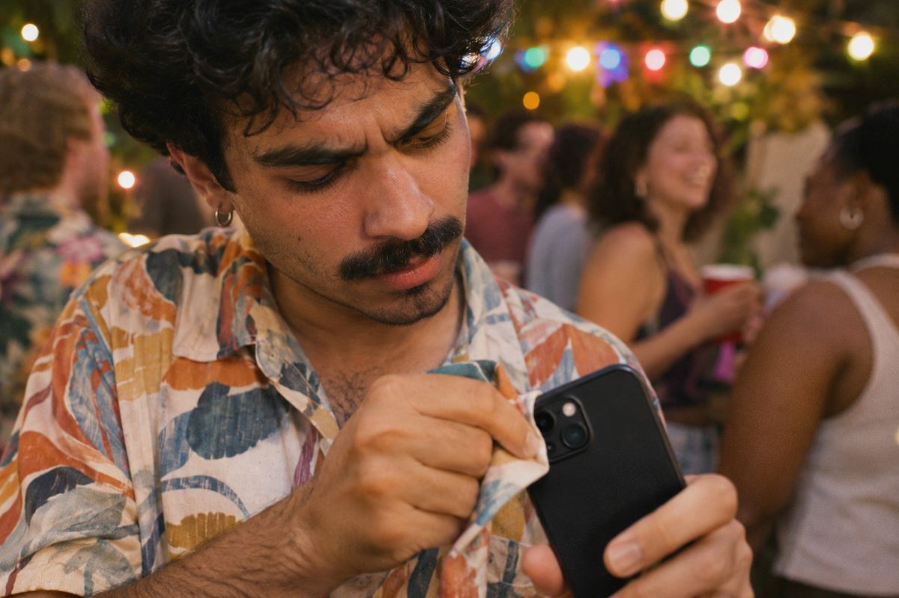

How to Take Good Pictures at Night With iPhone: Party Tips
Night mode or flash, dance floors, group shots in the dark, and wedding-guest manners.

Short answer: To take good pictures at night with an iPhone at a party, wipe the lens, stay at 1x and tap a face to set focus and exposure. Let Night mode handle still scenes like a candlelit table, and switch the flash on for moving people within a few steps. At weddings, keep the flash off during the ceremony.
Parties and receptions are hard light: dim rooms, colored bulbs and people who won’t stand still. This guide is for guests with a phone, not a pro with a camera bag. It covers when Night mode beats the flash, the handful of settings worth knowing, dance floors and group shots in the dark, wedding manners, and how to spend a limited roll well.
Night mode or flash: which one should you use?
Night mode brightens dim scenes with a longer capture, from a moment to several seconds depending on the light, which is why it shows a timer and needs you to hold still. According to Apple’s Night mode guide, it’s on iPhone 11 and later, it turns on automatically in low light, and the icon at the top of the screen turns yellow and shows how many seconds the shot will take. Hold the phone steady until it finishes, and know that turning on the flash or Live Photos switches it off.
That gives you a simple rule. Night mode wins when the scene is still and the existing light is worth keeping. The flash wins when people are moving, the room is very dark, or you want the bright-faces, black-background party look.
| Situation | Use | Why |
|---|---|---|
| Candlelit dinner table, everyone seated | Night mode | Keeps the warm light; seated people are still enough |
| Dance floor | Flash | A burst of light freezes faces; Night mode smears movement |
| Group photo in a dark room | Flash, or Night mode if everyone holds still | Flash is forgiving; Night mode looks nicer when it works |
| Toasts, seen from your seat | No flash | Tap the speaker’s face and lower exposure under the spotlight |
| Sparkler send-off | No flash, Burst | The sparklers are the light; flash flattens the glow |
| Ceremony | No flash, phone on silent | Manners, and the photographer’s shot |
Your iPhone picks the flash automatically unless you tell it otherwise. To decide for yourself, tap the Flash control above the frame and choose Auto, On or Off, as Apple’s camera tools guide shows. If you like the flash look on purpose, our guide to the disposable camera look on iPhone shows how to lean into it.
How to take good pictures at night with iPhone: 8 habits
- Wipe the lens first. A fingerprint smear turns every light into a hazy glow. Apple’s camera troubleshooting page says to clean the front and back lenses with a microfiber cloth if photos are blurry, and to remove any case or film that might block the camera.
- Stay at 1x and walk closer. In dim rooms, zooming in usually costs sharpness and adds noise, especially at 3x and beyond. Two steps forward beat 3x almost every time.
- Tap a face. Tapping sets focus and exposure on that spot, so the person you care about comes out right instead of the bright lamp behind them.
- Pull exposure down under spotlights. After tapping, drag the exposure control down a little until faces stop glowing white. Colored stage light especially needs this.
- Lock it when you’re waiting. Touch and hold on the subject until AE/AF Lock appears, and the camera stops readjusting while you wait for the toast or the kiss. Tap the screen again to release it.
- Brace yourself. Elbows against your ribs, phone held with both hands, breathe out as you shoot. For Night mode, rest the phone on a table or wall, and if crosshairs appear, line them up to reduce motion.
- Turn people toward the light. Backlight is an easy mistake at night: a friend in front of a bright window or a lit stage becomes a silhouette. Move so the light source is behind you, not behind them.
- Use Burst for anything fast. Swipe the shutter button left to fire a burst, then keep the sharp frame, as Apple’s Burst mode guide explains. You can also turn on Use Volume Up for Burst in Settings > Camera.

How to photograph a dark dance floor
The dance floor is where Night mode fails and the flash earns its keep. Set the flash to On, get within a few steps of the people you’re shooting, and accept that the background will go dark. That darkness is part of the look.
- Shoot from the edge, at chest height. You’ll catch faces instead of the tops of heads, and you won’t be in anyone’s way.
- Wait for the peak. Arms up on the chorus, the dip, the spin, the moment a song everyone knows starts. Those beats are predictable, so be ready a second early.
- Don’t shoot into the DJ lights. Lights pointing at you blow out the frame. Keep them to the side.
- Use short bursts. Three or four frames per moment, then lower the phone and dance.
- Let a little blur in. A sharp face with blurred hands and lights around it often feels more like the night than a perfectly frozen frame.
How to take group photos in the dark
- Move the group, not the light. Find the brightest even light in the room, such as the bar, a lamp or a lit doorway, and put people facing it.
- Pick flash or stillness. With the flash on, stand a few steps back so the whole group is in reach of the light without the front row blowing out. For Night mode, ask everyone to freeze until the shot finishes, and brace the phone.
- Stagger the heights. Tall people at the back or ends, a couple of people crouching in front. Every face should have a clear line to the lens.
- Use the timer to get yourself in. Prop the phone on a table, open the Camera Controls, tap Timer and choose 3, 5 or 10 seconds.
- Keep shooting after the pose. Count down, take the posed shot, then take two more. The laughing one right after is usually the keeper.
Candid party photos: shoot during the laugh, not after
Most candid photos fail by a second. Someone says something funny, you lift your phone, and by the time you press the shutter everyone is smiling politely at the camera. The fix is to keep the phone half-raised at chest height while you watch, so you’re already framed when the moment lands.
- Photograph the listeners. During toasts and stories, the best faces are in the audience, not at the microphone.
- Watch for the build-up. Laughter, hugs and happy tears all have a run-up you can see coming.
- Don’t announce it. “Smile!” turns a candid into a pose. Shoot quietly and let people forget you’re there.
- Get down to kid height for kids, and shoot hands, shoes and the cake table between the big moments. Those details tie a set together.
Need ideas for what to look for? A wedding photo scavenger hunt list doubles as a shot list for any party.
How to take pictures at a wedding as a guest
A wedding has a professional photographer, a couple with feelings about their day, and sometimes an explicit no-phones request. Good guest photos work around all three.
- Respect an unplugged ceremony. If the couple asks for one, put the phone away completely. Zola’s guide to unplugged weddings describes it as asking guests not to use phones, cameras or other recording devices during the ceremony, partly so the photographer isn’t competing with people’s arms.
- No flash during the ceremony, even if phones are allowed. It’s distracting, and it can land in the photographer’s frame.
- Stay in your seat. Never step into the aisle or lean out of the row for a better angle. The pro has that shot covered.
- Phone on silent. Shutter sounds during vows are noticed.
- Wait to post. Let the couple share first, and ask before posting anyone else’s photo.
- Shoot freely at the reception, unless you’ve been asked otherwise. That’s where guest photos are most valuable: the back tables, the dance floor and the late night that the photographer may not see.
Afterward, send your best few to the couple within a day or two, while they’re still gathering everything. If you’re the couple, our guide to collecting photos from wedding guests covers the other side.
Make every shot count when your roll is limited
Some couples and hosts hand guests a shared camera instead of hoping photos turn up in a group chat. Filmsera is one of these, and it’s ours. Guests join by scanning a QR code, tapping an invite link or typing an 8-character code, either in the free iPhone app or in any phone’s browser with no app or account (browser guests take photos only). Each guest gets a limited number of shots, 12 by default, and every photo stays hidden until the reveal time the host picked. Then everyone opens the film and sees the whole night at once, each photo tagged with who took it. If you’re planning one, here’s how Filmsera works at weddings.
A small roll changes how you shoot, in a good way: you wait for moments instead of spraying at them. Here’s one way to spend 12 shots at a wedding, and our ten creative prompts for a shared film have more ideas:
- 2 at arrival: the venue in the last light, and the people you came with.
- 2 at dinner: your table mid-laugh, and one detail you love.
- 2 during toasts: the couple and the listeners’ reactions, not the speaker.
- 4 on the dance floor: get close and shoot at the peaks.
- 2 late: the after-midnight crew and whatever happens at the exit.
No retakes and no peeking means you look up more, and the reveal does the rest.

Filmsera gives every guest a limited roll and keeps the photos sealed until the reveal, so the night gets lived first and seen together after. Get Filmsera on the App Store
Night photo checklist for parties and weddings
| When | Do this | Why |
|---|---|---|
| Before you leave | Charge the phone and clear some storage | Bursts fill storage fast, and a dead phone takes no photos |
| On arrival | Wipe both lenses; take off any lens-covering case | Smudges blur every light source |
| On arrival | Decide your flash setting instead of leaving it to chance | Auto may fire when you don’t want it |
| Ceremony | Silent, no flash, seated, or phone away if unplugged | The couple and the photographer |
| Dinner and toasts | Night mode, brace the phone, tap faces | Still scenes, warm light worth keeping |
| Dance floor | Flash on, 1x, a few steps away, short bursts | Freezes faces in the dark |
| Group shots | Face the group toward the light; take three | The one after the pose is usually best |
| Next day | Send your best few to the hosts | They’re gathering photos while memories are fresh |
FAQ
Is it better to use flash or Night mode at a party?
Use Night mode when the scene is still and the room’s own light looks good, such as a candlelit table or string lights over seated guests. Use the flash for moving people, very dark rooms and dance floors, because a short burst of light freezes faces while Night mode blurs anything that moves. You can’t use both at once: turning the flash on switches Night mode off.
Why are my iPhone photos blurry at night?
Usually one of three things. A Night mode shot can take a second or more, so moving people or a moving hand blur; brace the phone or use the flash instead. A smudged lens spreads every light into haze; wipe it with a microfiber cloth. And zooming in dim light costs sharpness, so stay at 1x and step closer instead.
Is it rude to take pictures at a wedding as a guest?
Not at the reception, unless the couple has asked otherwise. The ceremony is different: if it’s unplugged, keep your phone away completely, and even when phones are allowed, skip the flash, stay seated and keep the shutter silent. Never step into the aisle or in front of the photographer, and let the couple post first before you share anything publicly.
How do I take a good group photo in the dark?
Move the group so everyone faces the best light in the room, stagger heights so every face is visible, and choose between flash and a very still Night mode shot. Prop the phone and use the 3, 5 or 10 second timer if you want to be in it. Take at least three frames, because the relaxed one right after the pose is usually the best.
Should I turn off Live Photos at night?
If you want Night mode, yes. Apple notes that turning on Live Photos or the flash switches Night mode off, so if the yellow Night mode icon never appears in a dim room, check whether Live Photos is on. If you’re using the flash anyway, Night mode is off regardless, so Live Photos makes no difference to that choice.
Written by the Filmsera team
Filmsera is a shared disposable camera app for iPhone: create a film for your event, let guests join by QR code from the app or their phone's browser, and open the whole roll together at the reveal. Download on the App Store →
Photos in this article are illustrations created for Filmsera, not customer photos. App screenshots are from Filmsera on iPhone.